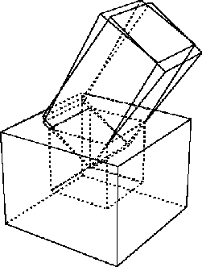

colormap [class]
:super object
:slots (cmapid planes pixels LUT-list)
-
- defines an xwindow colormap
and application oriented color look-up tables.
A color is represented by RGB values from 0 through 65535.
Color cells in a color map are addressed by their indices,
which are between 0 and 255 on 8-bit pseudo color display.
Here we assume your display device has 8bit pseudo color capability
which allows you to choose 256 colors at the same time.
Basically there are two ways in the use of color maps:
to share the system's default color map or to create private color maps.
If you use the system's default color map, you have to
be careful not to use up all the color cells in the map,
since the map is shared among many processes.
If you use private color maps, you can allocate all 256 color entries
in the map without worrying about other processes,
but the map has to be explicitly attached to your private windows.
The color map is activated by the window manager
when the mouse pointer is moved somewhere in the window.
The system's default color map is set up in x:*color-map*
which is an instance of the x:colormap class
when eusx begins execution.
If you use private color maps, you create instances of x:colormap.
These instances
correspond to the colormap object defined in the x server and are identified by
the cmapid stored in each instance.
When you use the system's default color map, you can define read-only
colors which are shared with other processes or define read-write
colors which are private to your EusLisp.
Read-only means that you can define arbitrary
color when you allocate the color cell,
but you cannot change it after the allocation.
On the other hand,
read-write colors can be altered even after you defined them.
Shared colors are read-only since other processes expect the colors to be
unchanged.
This read-only or read-write attribute is attached to each
color entry (often referred to as color cell).
A colormap object defines translation from a color id to a physical
representation that is a triplet of red, green and blue components.
However, these logical color ids cannot be chosen arbitrarily, especially when
you use the the system's default color map. The color id (often referred
to as 'pixel') is an index of a particular color in a color map and Xlib
chooses one of free indices for a shared color when allocation is requested.
Therefore, there is no way, for example, to guarantee many levels of
gray colors to be allocated contiguously or to begin from the first (zeroth)
index.
From the viewpoint of applications, more logical color naming is needed.
For example,
a number of gray levels should be referred to with their brightness as indices.
A ray trace program may wish to assign contiguous indices to a group of colors
of different brightness defined in HLS model.
To cope with this problem, EusLisp's colormap provides another translation table
called LUT (look-up table). For a logical group of colors, you can define
a LUT and attach a symbolic name to it. More than one LUTs can be defined
in a colormap.
LUT is an integer vector for the translation of application specific
logical color indices into physical pixel values that the Xserver can recognize.
:id [method]
-
- returns the cmap id.
:query pix [method]
-
- gets RGB values for the specific pixel number.
:alloc r g b [method]
-
- this method is the same as :store nil r g b.
A new color cell is allocated in this colormap and is assigned with the
specified RGB values.
:store pix r g b [method]
-
- sets RGB values to the pixth color cell.
:store pix color-name [method]
-
-
:Store is the lowest level method to set a color in a color map.
In the first form, you specify the color with the red, green and blue components
between 0 and 65535 inclusively. In the second form, you
specify the color by name like "red" or "navy-blue". If no such color-name is
found, nil is returned.
Pixel is either an integer which is the index in a color map or nil.
If it is integer, the color cell must be read-write-able.
If it is nil, a shared read-only color cell is allocated.
:Store returns the index of the color cell in the color map.
:store-hls pix hue lightness saturation [method]
-
-
stores the color specified in HLS (Hue, Lightness and Saturation) model
in the pixth entry of this colormap.
If pix is NIL, a shared read-only color cell is allocated.
:Store-hls returns the index to the allocated color cell.
:destroy [method]
-
- destroys this colormap and frees resource.
:pixel LUT-name id [method]
-
-
looks up in the LUT for the id'th entry and returns its pixel value.
LUT-name is the name of the look-up-table you defined by :define-LUT.
:allocate-private-colors num [method]
-
-
allocates num color cells in the private color map.
:allocate-colors rgb-list [private] [method]
-
-
Each element of rgb-list is a list of red, green and blue components.
Color cells are allocated for each rgb value and an integer-vector
whose elements are pixel values is returned.
:define-LUT LUT-name rgb-list [private] [method]
-
-
Colors described in rgb-list are allocated,
and an LUT is registered by the symbolic name of LUT-name.
In order to define private color cells, set private to T.
:define-gray-scale-LUT LUT-name levels [private] [method]
-
-
allocates levels of color cells that represent linear
gray scale colors and returns LUT.
For example, (send x:*color-map* :define-gray-scale-LUT 'gray8 8)
allocates eight gray colors in the system's default color map, and
returns an integer vector such as #i(29 30 31 48 49 50 51 0).
Physical pixel values can be inquired by sending the :pixel message,
for example, (send x:*color-map* :pixel 'gray8 2) returns 31.
:define-rgb-LUT LUT-name red green blue [private] [method]
-
-
defines an LUT for shrunk RGB representation.
For example, if red=green=blue=2, totally
 color cells
are allocated.
color cells
are allocated.
:define-hls-LUT LUT-name count hue low-brightness
high-brightness saturation [private] [method]
-
-
allocates count colors using the HLS model. Colors of the given hue (0..360),
saturation (0..1), and different levels of brightness between
low-brightness
and high-brightness are stored in the color map. A LUT named LUT-name
is also created.
:define-rainbow-LUT LUT-name count (hue-start 0) (hue-end 360) (brightness 0.5) (saturation 1.0) (private nil) [method]
-
-
allocates count colors using the HLS model.
Colors of the given brightness (0..1),
saturation (0..1), and different hues between
hue-start and hue-end
are stored in the color map.
A LUT named LUT-name is also created.
:LUT-list [method]
-
- returns all LUT list defined in this colormap.
Each entry in the list is a pair of the LUT-name and an integer vector.
:LUT-names [method]
-
- returns the name list of all LUT in this colormap.
:LUT name [method]
-
-
returns the integer-vector (LUT) identified by name.
:size LUT-name [method]
-
- returns the length of LUT
:planes [method]
-
- returns planes of this colormap.
:set-window xwin [method]
-
-
associates this colormap to the xwin window.
This colormap is activated when the cursor enters in xwin.
:free pixel | LUT [method]
-
- frees a specific color cell
addressed by pixel, or all the entries in LUT.
:init [cmapid] [method]
-
-
initializes this color map with cmap id.
All the LUTs registered are discarded.
:create &key (planes 0) (colors 1) (visual *visual*) (contiguous nil) [method]
-
- creates a new color map object.
XColor [class]
:super cstruct
:slots ((pixel :integer)
(red :short)
(green :short)
(blue :short)
(flags :byte)
(pad :byte))
-
- defines a color in the RGB model.
Use setf to assign value to each slots.
The RGB values are sign extended and the greatest value is
represented as .
:red [method]
-
- returns the red value of this XColor.
:blue [method]
-
- returns the blue value of this XColor.
:green [method]
-
- returns the green value of this XColor.
:rgb [method]
-
- returns the list of red, green and blue values
of this XColor.
:init pix R G B &optional (f 7) [method]
-
-
initializes XColor.
find-visual type depth &optional (screen 0) [function]
-
-
finds the visual-ID of the specified type and depth.
Type should be either :StaticGray, :GrayScale,
:StaticColor, :pseudoColor, :TrueColor or :DirectColor.
Usually the depth should be either 1, 8 or 24.
2016-03-23